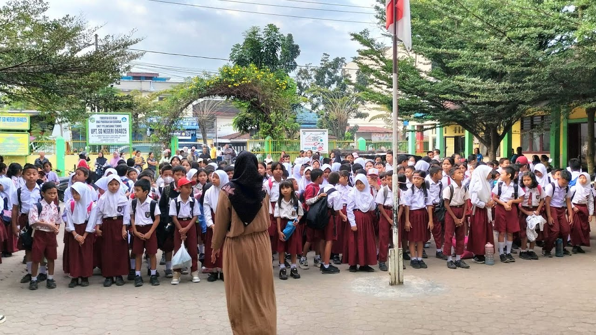
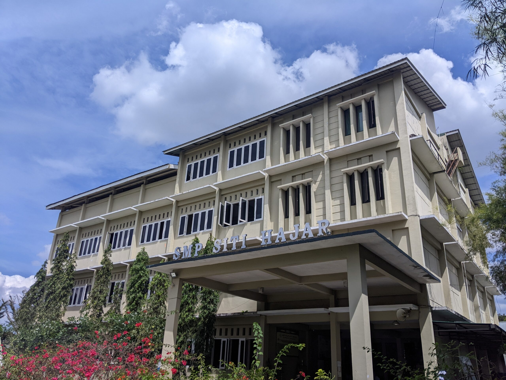
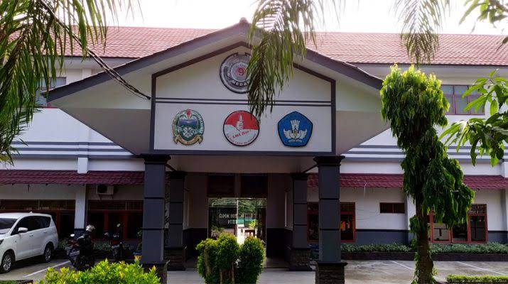

Riwayat Pendidikan
SD

SMP

SMK

Saya memulai pendidikan di sekolah dasar dan kemudian melanjutkan pendidikan ke jenjang SMP. Saat ini saya sedang menempuh pendidikan di SMK pada jurusan Rekayasa Perangkat Lunak (RPL).
- SD Negeri 25 Medan
- SMPS IT Siti Hajar
- SMK Negeri 09 Medan - Jurusan RPL